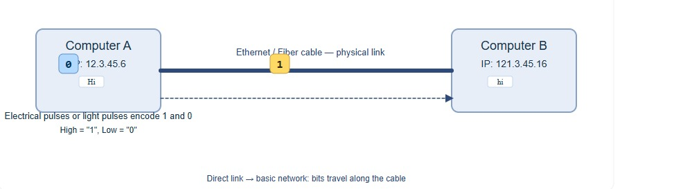
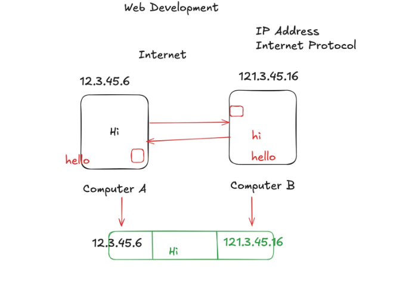

How the Internet Works (Page 1)
Principle 1: The Need to Share Information
The most fundamental truth is that we have information on one computer (Computer A) and we want it to be on another computer (Computer B). These computers are not in the same room.
How do we solve this? The simplest, most primitive way is to physically carry the information (e.g., on a USB stick). This works, but it's slow and doesn't scale. We need a direct, electronic connection.
So, we run a cable (like an ethernet cable or a fiber optic line) between Computer A and Computer B. We can now send electrical signals or pulses of light down this cable. We can agree on a simple code: a high-voltage signal means "1," and a low-voltage signal means "0."
We have just created the most basic form of a network: a direct link. We can now send bits (1s and 0s) between two computers.

Principle 2: The Problem of Scale
This works for two computers. But what if we have three computers (A, B, and C) and they all need to talk to each other? We would need a cable from A to B, from B to C, and from A to C. For four computers, we'd need six cables. For 100 computers, we'd need 4,950 cables.
This is a failure of scale. Connecting every machine to every other machine directly is physically impossible.
The logical solution is to have a central device. Every computer connects to this one central point (let's call it a **Switch**). When Computer A wants to talk to Computer C, it sends the message to the switch, and the switch forwards it only to Computer C.
We have just invented a **Local Network**. A group of computers in close proximity (like an office or a home) can now communicate efficiently.

Principle 3: Connecting Networks
If one office has a LAN and another office has a LAN, how can they talk?
A Router connects one network to another.
Many routers linked together form the Internet — a network of networks.

Principle 4: The Problem of Finding Anyone (Addressing)
We have built a global web of interconnected networks. If I'm on my computer in my office, how do I send a message to a specific server in another country? There are millions of computers. I need a unique address for every single device.
This gives rise to the need for a universal addressing system. Just like the postal service needs a unique street address for every house in the world, our network of networks needs a unique address for every connected device.
This is the reason the IP Address (Internet Protocol Address) exists. It's a unique label (e.g., 142.250.184.142) assigned to each device. When a router sees a message, it looks at the destination IP address and says, "Based on this address, I don't need to send it to the network on my left; I need to send it to the network on my right to get it one step closer to its final destination." Routers don't know the full path; they just know the next best "hop" to send the message on.
Diagram
Example: Computer A (12.3.45.6) sends "Hi" to Computer B (121.3.45.16).

Principle 5: The Problem of Reliability and Fairness
If I want to send a large file, like a 1-hour video, it is a huge stream of data. If I try to send it all at once:
1. I would completely monopolize the connection, and no one else could send anything until my video was done.
2. If even a single bit of information gets corrupted during the transfer, the entire file is ruined, and I have to start over from the beginning.
This is inefficient and unreliable. The logical solution is to break the large file into many thousands of small, numbered pieces. Let's call them Packets.
Each packet is like a tiny envelope. It contains:
- A small piece of the data (a "payload").
- The destination IP address (where it's going).
- The sender's IP address (so they can reply).
- A number, so the receiving computer knows how to reassemble them in the correct order ("Packet 1 of 5,000," "Packet 2 of 5,000," etc.).
These packets can travel independently across the internet, sometimes even taking different routes. The receiving computer gathers all the packets, checks if any are missing (and requests them again if they are), and reassembles them in the correct order to recreate the original file.
This system of rules for addressing, breaking down, sending, and reassembling data is called a **Protocol**. The main one used on the internet is **TCP/IP (Transmission Control Protocol / Internet Protocol)**.
Short step-by-step summary
- Direct link: Two devices connect physically (or wireless) and send bits.
- Switch/LAN: Multiple devices attach to a switch so they can talk locally.
- Router: Routers connect different networks and forward packets between them.
- IP address: Each device gets an address so routers can route packets.
- Packets & TCP: Data is split into numbered packets; TCP handles lost packets, order, and retransmission to ensure reliability.
Extra — Common terms explained
MAC address: Hardware address used by the local LAN for delivery (different from IP which is for routing).
DNS: DNS translates human-friendly names (like example.com) into IP addresses.
Port: A number identifying a specific service on a device (e.g., HTTP typically uses port 80).
Firewall: A filter that allows/blocks traffic based on rules.